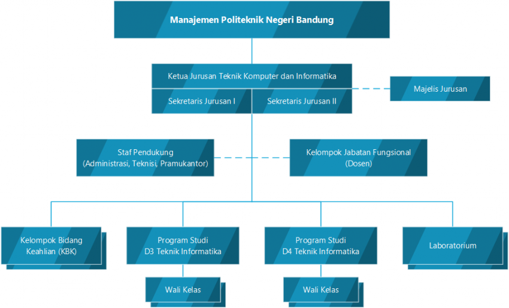

| A. Manajemen Jurusan Periode 2019-2023 | |||
|---|---|---|---|
| 1 | Ketua Jurusan | Bambang Wisnuadhi, M.T | 197201061999031002 |
| 2 | Sekretaris | Ani Rahmani, M.T | 196810141993032002 |
| B. Program Studi | |||
| 1 | Ka. Prodi Teknik Informatika D-III | Ghifari Munawar, S.Kom.,M.T | 198604122014041001 |
| 2 | Ka. Prodi Teknik Informatika D-IV | Santi Sundari, S.Si., M.T | 197109031999032001 |
| C. Kelompok Bidang Keahlian (KBK) | |||
| 1 | Ka. KBK Sistem Informasi | Suprihanto, BSET., M.Sc. | 196303161995121001 |
| 2 | Ka. KBK Rekayasa Perangkat Lunak | Joe Lian Min, M.Eng. | 196610181995121001 |
| 3 | Ka. KBK Multimedia | Iwan Awaludin, ST, M.T. | 197604182001121004 |
| D. Laboratorium | |||
| 1 | Ka.Lab. Teknologi Informasi | Setiadi Rachmat, B.Eng., M.Eng. | 196904041998031001 |
| 2 | Ka.Lab. Rekayasa Perangkat Lunak | Irwan Setiawan, M.T | 198004192005011002 |
| 3 | Ka.Lab. Sistem Informasi & Database | Ade Hodijah, M.T | 198502102015042001 |
| 4 | Ka.Lab. Multimedia | Yudi Widhiyasana, S.Si., M.T. | 197407182001121002 |
| 5 | Ka.Lab. Jaringan & Server | Maisevli Harika, M.Sc | |
| E. Wali kelas Program Studi Teknik Informatika D-III | |||
| 1 | I-A (Angkatan 2018) | Irawan Thamrin, M.T | 196208151990031001 |
| 2 | I-B (Angkatan 2018) | Zulkifli Arsyad, M.T | 198801292015041003 |
| 3 | II-A (Angkatan 2017) | Dr. Nurjannah Syakrani, M.T. | 196312131992012001 |
| 4 | II-B (Angkatan 2017) | Jonner Hutahaean, M.InfoSys. | 196210211993031002 |
| 5 | III-A (Angkatan 2016) | Ida Suhartini, M.Kom | 198012122008122001 |
| 6 | III-B (Angkatan 2016) | Ferry Feirizal, BSCS., M.Kom. | 195905211994031001 |
| F. Wali kelas Program Studi Teknik Informatika D-IV | |||
| 1 | I-A (Angkatan 2018) | Urip Teguh Setidjohatmo, M.Kom. | 196009281994031001 |
| 2 | II-A (Angkatan 2017) | Rahil Jumiyani, M.Sc | - |
| 3 | III-A (Angkatan 2016) | Suprihanto, BSET., M.Sc. | 196303161995121001 |
| 4 | IV-A (Angkatan 2015) | Ade Chandra Nugraha, S.Si., M.T. | 197312271999031003 |
| G. Pembina Himpunan | |||
| 1 | Yudi Widhiyasana, S.Si., M.T. | ||
| H. Komisi Displin Mahasiswa | |||
| 1 | Ferry Feirizal, BSCS., M.Kom. | ||
| I. Bimbingan & Konseling Mahasiswa | |||
| 1 | Ida Suhartini | ||
| J. PAK Jurusan | |||
| 1 | Bambang Wisnuadhi, M.T | ||
| 2 | Ani Rahmani, M.T | ||
| 3 | Jonner Hutahaean, M.InfoSys. | ||
| 4 | Irwan Setiawan, M.T | ||